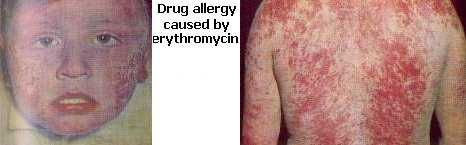

AUTOIMMUNE CYTOTOXIC HEMATOLOGIC SYNDROMES
Several autoimmune cytotoxic anemias are known. Autoreactive IgG or IgM may cause them via complement and opsonization mechanisms. The autoimmune cytotoxic mechanisms may be classified like this:
- Autoimmune hemolytic anemiae provoked by warm hemolysins (Ig with temperature optimum of 37C).
- Idiopathatic
- Secondary:
- In systemic autoimmune disorders (lupus, rheumatic fever, ulcerative colitis, sarcoidosis).
- In lymphoid hemoblastoses (lymphomas, lymphoblastic leukemia).
- Viral infections with polyclonal lymphocyte activation (mononucleosis).
- Drug-induced (methyl-DOPA, quinidine etc.)
2. Autoimmune hemolytic anemiae provoked by cold hemagglutinins (temperature optimum below 31O
С).2.1.Idiopathatic
2.2.Secondary:
- In mycoplasma infection
- In viral infection
- In lymphoid hemoblastoses
3. Paroxysmal nocturnal hemoglobinuria (or PNH -complement mediated Ig-independent hemolysis of mutant clonal blood cells deficient in PIG-A anti-complement anchoring protein)
3.1.Idiopathatic
3.2.Secondary:
- In syphilis
- In viral infections
- Cold hemagglutinin hemolytic anemia , mediated by IgM was a first human autoimmune disorder ever described (J. Donat, K.D. Landsteiner; 1904) as “cold hemagglutination disease”. The autoantibodies of this syndrome are directed against a product of AB0 agglutinogen incomplete glycosylation products – I/i antigens, tightly associated with glucose transporting protein glycophorin. I-antigen provokes Ig M synthesis, but I-antigen triggers, mostly, Ig G. These anti-i Ig G may, in turn, provoke anti-idiotypic Ig M similar to rheumatoid factors. Sometimes patients display also Ig A against RBC. Ig M displays maximal agglutinating and complement binding activity in cool temperature. Moreover, their target has 2 conformations, with the transition between them being temperature-associated. The conformation corresponding to cool weather is more fit for coupling with antibodies. Due to this reasons, the attacks of disease are provoked in relatively cool distant portions of the body, having local temperature below 310 C (hands, toes). Clinical manifestation includes hemagglutination, extravascular and intravascular hemolysis, microthrombosis with subsequent ischemia and Raynaud’s phenomenon, small foci of tissue necrosis and inflammation around them. The leading mechanism of RBC destruction in this disease is complement-mediated opsonin phagocytosis, so RBC are lysed mostly within Kupffer cells and other phagocytes. Cross-activation of autoimmunity by shared Mycoplasma pneumoniae epitopes and polyclonal immunostimulation of B cells by EBV in mononucleosis - may cause mild form of this disease, bypassing the natural autotolerance mechanisms. The hemolysins in this syndrome are cytotoxic also for lymphocytes. Few cases of cold hemagglutinin hemolytic anemia are caused by autoantibodies towards other RBC antigens (SP or Pr).
- Cold paroxysmal autoimmune hemolytic anemia , which is another distinct syndrome, not to be mixed with cold hemagglutin hemolytic anemia, discussed above, depends on production of IgG towards P-antigen of RBC. Antibodies affix complement in cool distal parts of the body in daytime, after that complement lyses the RBC during night bed rest, when body warms up. In this syndrome hemolysis is, mostly, of intravascular type, so a patient may get up with hemoglobinuria.
- The most common autoimmune hemolytic anemia is warm antibody immunohemolytic anemia, mediated by Ig G (rarely – by Ig A). The antibodies are active in 370 C. The targets of this IgG are epitopes of Rh-antigen (c or hr’ and e, also designated as hr’’). In primary idiopathic form of this disease the mechanisms involve antibody-mediated phagocytosis, intracellular (extravascular) hemolysis in spleen and liver, hepatosplenomegaly and appearance of spherocytes. Spherically shaped RBC is resulted from removal of RBC membrane bits in attempts of cell engulfment. Spherocytes may be observed in other immune hemolytic anemiae also. For example, they are characteristic for inherited microspherocytosis. In all cases, including hereditary erythrocytopathies, their origin is related to immune phagocytosis of RBC in liver (if antibody titers are high) and/or spleen (both in low and high titers).
Any immune hemolytic anemia with IgG-mediated hemolysis is characteristic for positive Coombs’ test. It is fluorescence of RBC, treated with donkey anti-human fluorescein-matched anti-IgG serum, registered under ultraviolet irradiation (Fig. ). Although this test is diagnostically valuable for IgG-mediated isoimmune and autoimmune anemiae, its sensitivity is not great (above the minimum of 500 IgG molecules per one erythrocyte). At the same time, much smaller number of IgG molecules (24-34 per single RBC) is enough to induce hemolysis.
The severity of warm immunohemolytic anemiae varies from heavy cases, accompanied by visible hemolytic jaundice (Hayem-Vidal’ syndrome), to mild inapparent ones. Some of warm immunohemolytic anemiae are drug-induced and belong to so-called drug allergy.

Drug allergy is extremely broadly spread and may be caused by prescribed drugs, as well as by products of their metabolism. Drug allergy is not always resulted from cytotoxic reactions. It involves different mechanisms of immune tissue injury. As a rule, drugs are haptens and do not cause direct sensitization. The allergy is aimed at complexes of a drug and self-antigens. Some drugs are directly antigenic (protein preparations, serum products, some non-proteic substances with high affinity to proteins etc.). A drug may derange the mechanisms of autotolerance, thus causing autoallergy. Drug-induced allergy can be manifested in anaphylaxis (penicillin), cytotoxic reaction (a - methylDOPA), immune complex process (ampicillin), cell-mediated hypersensitivity (tuberculin) and combination of all these mechanisms, depending on the route of drug introduction. A kind of combined systemic drug allergy is serum sickness (see below).Anti-hypertension drug a - methylDOPA is able to provoke warm IgG immunohemolytic anemia with typical clinical manifestation, because it deranges the suppression functions of lymphocytes, thus increasing the production of anti-hr’ warm hemolysins. Some other drugs can act as haptens and induce in some persons an antibody response directly, by binding to a RBC membrane constituents (penicillin antibiotics, streptomycin, quinine, phenacetins, sulfanilamides, salicylates). Sometimes anti-drug (or anti-drug-containing complex) antibodies present and bind their targets in circulation, and immune complexes damage the blood cells, playing a role of innocent bystanders. All kinds of drug induced hemocytopenia may decrease not only RBC number, but also cause thrombocytopenia and leukopenia, achieved by analogous mechanisms. Total contribution of drug-induced processes among all cases of immune hemolytic anemiae is quite substantial - about 20%.
The autoimmune hemocytopeniae are not always hit the mature peripheral blood cells. Hematopoetic progenitor stem cells, living in bone marrow, also express some unique surface antigens, which may be attacked by selective autoimmune process. Autoimmune mechanism may cause the death or stop in proliferation of blood stem cells within bone marrow. As a result, immune anemia or other immune hemocytopenia may have the mechanism of aplastic (and even myelophthisic) character, but proceeds without signs of increased hemolysis in peripheral blood. According to some estimates (A.M. Marmont, 1981) not less than 40% of “aplastic” anemiae, in fact, follow this kind of pathogenesis. The proof of their autoimmune nature is the absence of mutations in hematopoetic progenitor cells, observed in cytogenetic analysis, clinical effectiveness of immunosuppresors for their treatment and also their experimental autoimmune reproduction in animals (V. Hydegger, 1984). Aplastic effect can be rendered by antibodies (e.g. directed against erythropoetin or its receptor), or by suppressing effect of lymphocytes over progenitor bone marrow cells. Some drugs (amidopyrin, phenylbutazone, anti-thyroid drugs, sulphanilamides) and several viruses (parvovirus B19, causing the infectious erythema of infants; hepatitis C and E viruses) are able to provoke autoimmune aplastic hemocytopeniae in predisposed individuals, especially in persons, prone for autoallergy, like carriers of DR5 MHC-haplotype. The result may manifest in agranulocytosis, thrombocytopenia and/or anemia. The following table contains the classification of autoimmune aplastic anemiae:
| Anemia | Target cells | Mechanisms |
| Primary & secondary drug & virus induced autoimmune aplastic hemocytopenia | CFU-S | IgG (rarely), T-suppressors, immune complexes |
| Congenital autoimmune aplastic Blackfan-Diamond anemia | BFU-E | Autoantibodies and T-suppressors |
| Acquired aplastic autoimmune anemia with isolated depression of erythroid stem | ВFU-E, CFU-E, erythroblasts, erythropoetin receptors. | IgG (often), Т-suppressors |
| Aplastic anemia associated with PNH | Mutant PIG-A deficient clone | IgG |
| HEMPAS (hereditary erythroblastic multinucleation mediated per acidified serum) | I/i- antigens | IgM |
 The peculiar kind of autoimmune anemia is pernicious
Addison-Birmer’ cobalamin deficient megaloblastic anemia. Primary link of this
disorder mechanism is autoimmune atrophic gastritis, caused by cytostatic and blocking
effects of autoantibodies towards the components of H+-pump and/or gastrin
receptor of gastric mucosa parietal canalicular cells (B.H. Toh et al, 1991). In a few
patients there are also blocking autoantibodies against intrinsic factor (IF), necessary
to absorb B12 vitamin, which prevent complex formation between cobalamin and
this gastromucoprotein. Very rare, but also observed, are binding autoantibodies against
IF- B12 complex, which avert the absorption of this complex by intestinal
receptor. As a result, megaloblastic anemia is manifested, although its pathogenesis is
also autoimmune.
The peculiar kind of autoimmune anemia is pernicious
Addison-Birmer’ cobalamin deficient megaloblastic anemia. Primary link of this
disorder mechanism is autoimmune atrophic gastritis, caused by cytostatic and blocking
effects of autoantibodies towards the components of H+-pump and/or gastrin
receptor of gastric mucosa parietal canalicular cells (B.H. Toh et al, 1991). In a few
patients there are also blocking autoantibodies against intrinsic factor (IF), necessary
to absorb B12 vitamin, which prevent complex formation between cobalamin and
this gastromucoprotein. Very rare, but also observed, are binding autoantibodies against
IF- B12 complex, which avert the absorption of this complex by intestinal
receptor. As a result, megaloblastic anemia is manifested, although its pathogenesis is
also autoimmune.
Autoimmune cytotoxic process is able to cause also non-anemic hemocytopeniae. The drugs mentioned above, or viruses may trigger anti-platelet autoimmunity, creating neoantigens on platelet surface. Broadly spread and clinically important example is chronic relapsing autoimmune thrombocytopenic purpura, known in USA as idiopathic thrombocytopenic purpura (ITP) and in continental Europe as Verlhoff’s disease. In this disorder patients (mostly, children and women between 20 and 40 years), express anti-platelet autoantibodies against membrane IIa/IIIb glycoprotein complex or Ib glycoprotein. IgG-coated platelets are trapped by macrophages of enlarged spleen (hypersplenism). Marrow examination reveals megacaryocytosis. Interestingly, normal human IgG are of some therapeutic effect in ITP, which can be explained with presence of natural suppressing anti-idiotypes in normal serum. The Ig G in Verlhoff’s disease may cross placenta and cause neonatal transient thrombocytopenia. Secondary form of autoimmune thrombocytopenia is observed in systemic lupus erythematosus, for which it may be sometimes initial manifestation, and in lymphomas. The combination of autoimmune thrombocytopenia and immunohemolytic anemia is known as Evans – Fisher syndrome.
Selective autoimmune neutropenia with autoantibodies towards NA-2 autoantigen is known as separate syndrome. Another type of autoimmune neutropenia is observed in Felti’s syndrome, still another autoimmune response for neutrophil cytoplasmic antigen(s) presents in many vasculitis syndromes. These autoantibodies are called ANCA. P-ANCA locates perinuclear cytoplasmic antigen of neutrophils (myeloperoxidase), and is common for 95% of patients with Wegener’s granulomatosis. C-ANCA gives more diffuse staining of cytoplasm in immunofluorescent test and binds neutrophilic protease 3. They are most typical for periarteriitis nodosa. The subsets of ANCA may overlap in the same patient and same vasculitis. ANCA do not cause extensive trap of neutrophils, but rather are able to activate neutrophils and their interaction with endothelium, to promote toxic oxygen radicals production and block proteolysis inhibitors in target cells, thus assisting to the mechanisms of vasculitis. ANCA syndromes are accompanied also by cytotoxic pauci-immune crescentic rapidly progressing glomerulonephritis of III type.
The stimulating action of ANCA is single well-proven non-cytotoxic clinical effect of antibodies towards blood cells. Under experimental conditions many authors have obtained stimulation of hematopoesis by anti-blood cell cytotoxic sera as early as in 1955 (N.A. Fiodorov et al.) and 1963 (A.M. Namyatysheva et al.). But, it is not known, if these effects were direct, or mediated via immune hemolysis products. Yet, it can be proposed, that growth-stimulating autoantibodies against blood and bone marrow cells may exist, by analogy with anti-thyroid growth stimulating antibodies.
Anti-lymphocytic autoantibodies are known in some rheumatoid disorders as blocking the cell cycle and DNA synthesis by lymphocytes.
To complete the discussion about the autoimmune hematological disorders, we mast mention that autoantibodies to cardiolipin or to blood coagulation factors (VIII-vW, V, IX, II and XIII) are able to cause coagulopathies and hemorrhagic syndrome. These can be observed in systemic lupus, von Willebrand disease, and sarcoidosis. Similar autoimmune coagulopathy was reported in some tuberculosis patients, getting isoniazide therapy. Both spontaneous productions of such antibodies and coagulant-induced exhibition are known. In last case the antibodies provoke desensitization to prescribed coagulants.
NEXT CHAPTER
OR